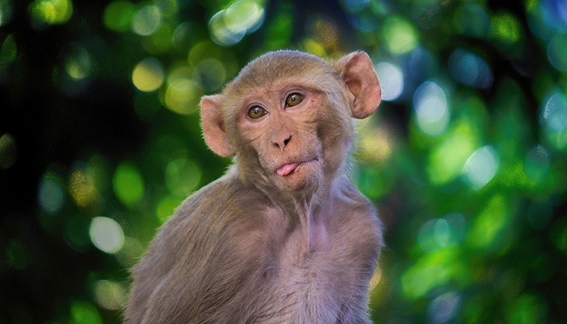
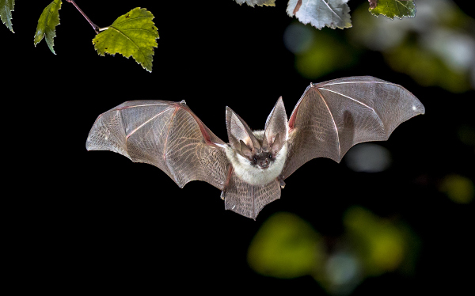

Macaco
Primates
| Reino: | Animalia |
| Classe: | Mammalia |
Macaco é um termo de origem africana (provavelmente do banto
makako) utilizado como designação comum a todas as espécies de símios ou primatas antropoides. É
aplicada restritivamente no Brasil aos cebídeos (ou macacos do Novo Mundo) em geral. No sentido estrito,
"macaco" refere-se às espécies de primatas pertencentes ao género Macaca.
A designação mico se origina, segundo o Dicionário Aurélio, do caraíba (karib)
continental. É bastante usada no Brasil, onde costuma aplicar-se às espécies do gênero Cebus, no
Sul, e às espécies de pequeno porte, ou saguis, no Norte.
O termo sagui se origina do tupi antigo sagûi e também
designa os macacos calitriquídeos de pequeno porte.
Ainda segundo Cunha, o termo símio, que também designa os macacos
(tendo sido registrado no português dos séculos XVI e XVII), vem do latim simius, de
simus, "que tem o nariz chato".
Morcego
Chiroptera
| Reino: | Animalia |
| Classe: | Mammalia |
O morcego é um animal mamífero da ordem Chiroptera, cujos
integrantes apresentam uma fina membrana de pele entre os dedos, a qual se estende até as patas e se conecta
às laterais do corpo, formando as asas. Distinguem-se das aves, pois estas possuem penas suportadas por
ossos. Os morcegos são os únicos mamíferos com voo verdadeiro. No Brasil, o morcego pode ser raramente
chamado pelos seus nomes indígenas andirá ou guandira.
Quase 25% de todos os mamíferos conhecidos são morcegos e, em toda a região
intertropical, há uma fauna rica constituída por esses animais. Esse grupo abrange 17 famílias e 177
gêneros. Até o momento, inventariaram-se, na região centro-leste, 21 espécies de quirópteros, distribuídas
em três famílias: Phyllostomidae (com 12 espécies), Vespertilionidae (com sete espécies) e Molossidae (com
duas espécies).
Tradicionalmente, divide-se os quirópteros em morcegos propriamente ditos (subordem
Microchiroptera) e raposas-voadoras (subordem Megachiroptera). Representam um quarto de toda as espécies de
mamíferos do mundo. São pelo menos 1 116 espécies, que possuem uma enorme variedade de formas e
tamanhos, podem ter uma envergadura de cinco centímetros a dois metros, uma enorme capacidade de adaptação a
quase qualquer ambiente (só não ocorrem nos polos) e uma ampla diversidade de hábitos alimentares.
Os morcegos têm a dieta mais variada entre os mamíferos, pois podem comer frutos,
sementes, folhas, néctar, pólen, artrópodes, pequenos vertebrados, peixes e sangue. Cerca de 70% dos
morcegos são insetívoros, alimentando-se de insetos, sendo praticamente todo o restante frugívoros, ou seja,
alimentam-se de frutas. Somente três espécies se alimentam exclusivamente de sangue: são os chamados
morcegos hematófagos ou vampiros, encontrados apenas na América Latina. Dessa maneira, morcegos contribuem
substancialmente para a estrutura e dinâmica dos ecossistemas, pois atuam como polinizadores,
dispersores de sementes, predadores de insetos (incluindo pragas agrícolas), fornecedores de nutrientes em
cavernas e vetores de doenças silvestres, dentre outras funções. Possuem ainda o extraordinário sentido da
ecolocalização (biossonar ou orientação por ecos), que utilizam para orientação, busca de alimento e
comunicação.